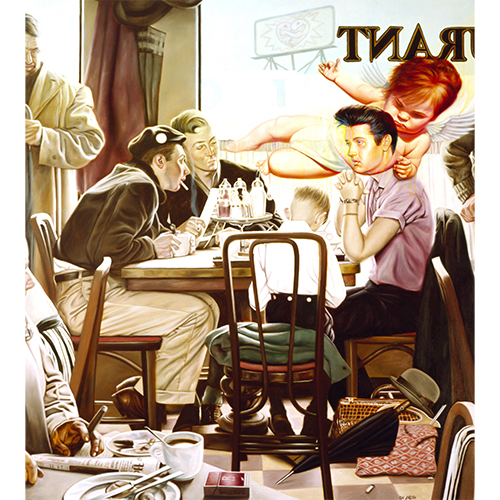

Exhibitions
Pop Art, Nineties-Style, Gallery Stendhal, New York, New York, US, 1996–August 31, 1996.
Merry Karnowsky Gallery, gallery presentation, Los Angeles, California, US, circa 1999–2001.
Opera Gallery, gallery presentation (work exhibited and offered via gallery), New York, New York, US, circa late 2000s–early 2010s.
Literature
Ron English, Popaganda: The Art & Subversion of Ron English (San Francisco: Last Gasp, 2001), p. 89. ISBN 1-887128-60-3.
Ron English, Son of Pop: Ron English Paints His Progeny (Cotati, CA: 9mm Books, 2007), p. 12. ISBN 978-0976632511.
Notes
This work references Norman Rockwell's Saying Grace. A representative image is available here .